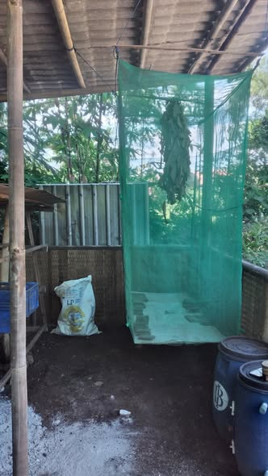
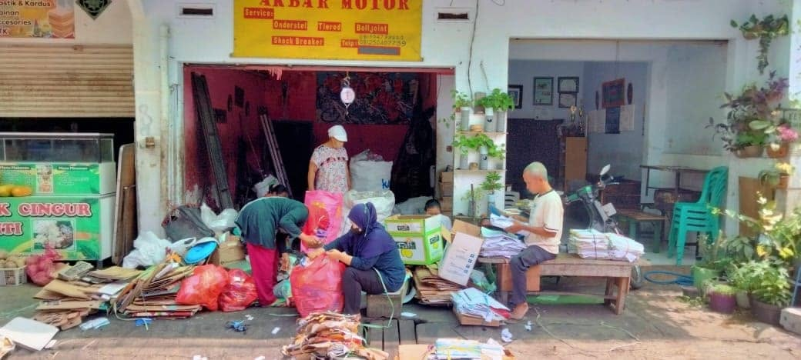

Budidaya maggot merupakan salah satu praktik pengelolaan sampah organik yang dikembangkan di Kampung Semar, RT 06 RW 02, Kelurahan Arjosari, Kota Malang. Kegiatan ini menjadi bagian dari upaya mengurangi sampah rumah tangga sekaligus menghasilkan sumber daya yang masih memiliki nilai manfaat bagi kegiatan perikanan dan peternakan. Maggot merupakan larva lalat yang dapat memanfaatkan bahan organik, termasuk sisa makanan, sebagai sumber pakan dalam proses pertumbuhannya.
Pemanfaatan sampah organik rumah tangga
Berdasarkan penelitian Universitas Negeri Malang tahun 2025, sisa makanan rumah tangga di Kampung Semar dipisahkan untuk dimanfaatkan sebagai pakan budidaya maggot. Proses pemilahan dilakukan sejak dari rumah agar setiap jenis sampah dapat diarahkan ke jalur pengelolaan yang sesuai.
Pengurus PKK menjelaskan bahwa sisa makanan diarahkan untuk maggot, sampah plastik dan kardus masuk ke bank sampah, sedangkan sampah yang tidak dapat diurai dapat dimanfaatkan sebagai bahan ecobrick. Pembagian tersebut membantu masyarakat mengurangi pencampuran berbagai jenis sampah dan mengoptimalkan pemanfaatan bahan yang masih dapat digunakan.

Pengelolaan sampah organik melalui maggot menjadi salah satu contoh pemanfaatan limbah rumah tangga yang terintegrasi dengan kegiatan lingkungan lainnya. Kebiasaan memilah dari sumbernya menjadi langkah penting agar sisa makanan dapat dimanfaatkan untuk budidaya, bukan tercampur dengan material lain.
Pengembangan budidaya dan pemanfaatan hasil
Berdasarkan wawancara Ketua RT 06 yang diberitakan Malang Posco Media, pengembangan budidaya lele dan maggot sudah menjadi bagian dari kegiatan produktif Kampung Semar sejak periode awal pengembangan kebun. Pada 2022, warga mengembangkan kolam pemancingan ikan lele. Dalam pemberitaan tersebut dijelaskan bahwa maggot juga dijual untuk kebutuhan umpan memancing.
Kegiatan pemancingan menjadi salah satu aktivitas produktif yang dapat memberikan pemasukan bagi kas RT. Pemanfaatan maggot sebagai umpan memperlihatkan hubungan antara pengelolaan sampah organik dan aktivitas perikanan di tingkat kampung.

Pengembangan produk pakan dari maggot
Pada Juni hingga Juli 2025, mahasiswa Program Studi Hubungan Internasional Universitas Muhammadiyah Malang melakukan pendampingan kepada warga Kampung Semar mengenai pengolahan maggot basah menjadi produk pakan hewan. Kegiatan pendampingan tersebut memperkenalkan proses pengeringan maggot agar dapat dimanfaatkan sebagai pakan ikan maupun unggas.
Pelatihan ini ditujukan untuk meningkatkan keterampilan warga dalam mengolah hasil budidaya menjadi produk yang memiliki nilai ekonomi lebih tinggi. Pengolahan tersebut memperlihatkan bahwa potensi budidaya maggot tidak hanya berada pada pemanfaatan sampah organik, tetapi juga pada pengembangan produk turunan yang dapat mendukung kegiatan ekonomi masyarakat.
Pengembangan kelembagaan UMKM Maggot
Budidaya maggot di Kampung Semar juga berkembang menjadi kegiatan usaha masyarakat melalui UMKM Maggot Kampung Semar. Penelitian pengabdian masyarakat oleh Joice Soraya dari Politeknik Negeri Malang yang diterbitkan dalam Jurnal Difusi Ipteks Legowo pada 2025 secara khusus membahas penguatan kelembagaan UMKM Maggot Kampung Semar.
Penelitian tersebut menjelaskan bahwa usaha ini memanfaatkan limbah organik rumah tangga sebagai bahan budidaya maggot. Kajian tersebut juga menyoroti pentingnya penguatan kelembagaan serta kerja sama formal dengan Dinas Lingkungan Hidup Kota Malang untuk mendukung keberlanjutan usaha.
Pendampingan kelembagaan menghasilkan dokumen kerja sama yang mencakup hak dan kewajiban para pihak serta penguatan kapasitas pelaku UMKM. Dengan dukungan kelembagaan, kegiatan budidaya diharapkan dapat dikelola secara lebih terarah dan memiliki landasan kerja sama yang jelas.
Manfaat budidaya maggot bagi Kampung Semar
Budidaya maggot memberikan manfaat melalui beberapa aspek yang saling berhubungan. Dari aspek lingkungan, kegiatan ini membantu memanfaatkan sisa makanan rumah tangga agar tidak seluruhnya menjadi sampah yang dibuang. Dari aspek produktivitas, hasil budidaya maggot dapat digunakan untuk mendukung kegiatan perikanan dan pengolahan pakan hewan.
Dari aspek ekonomi, pengembangan UMKM Maggot membuka peluang pengolahan hasil budidaya menjadi produk bernilai guna. Sementara itu, dari aspek pendidikan, kegiatan ini memberikan pemahaman kepada warga dan anak-anak mengenai pentingnya memilah sampah serta mengelola limbah organik secara bertanggung jawab.
Keempat aspek tersebut saling berkaitan. Pemilahan sampah menyediakan bahan organik, budidaya maggot mengolah bahan tersebut, hasilnya dapat dimanfaatkan untuk kegiatan produktif, dan penguatan usaha membantu membuka peluang pengembangan lebih lanjut.
Mengubah sisa organik menjadi sumber daya
Melalui budidaya maggot, Kampung Semar memperlihatkan bagaimana sampah organik dapat dialihkan menjadi sumber daya produktif melalui keterlibatan masyarakat, pengembangan keterampilan, dan penguatan usaha berbasis lingkungan.
Praktik ini tidak berdiri sendiri, melainkan terhubung dengan kebiasaan memilah sampah dari rumah, kegiatan bank sampah, perikanan, serta pendampingan masyarakat. Keberlanjutannya bergantung pada konsistensi pemilahan, pengelolaan budidaya, dan kerja sama warga dengan mitra pendamping.
Sumber Informasi
Artikel ini disusun dengan merujuk pada pemberitaan dan penelitian berikut.
- Jurnal Difusi Ipteks Legowo. “Penguatan Kelembagaan UMKM Maggot melalui Pendampingan Perjanjian Kerjasama di Kelurahan Arjosari Kota Malang.” 2025.Baca penelitian Jurnal Difusi Ipteks Legowo ↗
- Universitas Muhammadiyah Malang. “Mahasiswa UMM Ajari Warga Ubah Limbah Maggot Jadi Produk Pakan.” 19 Juli 2025.Baca berita Universitas Muhammadiyah Malang ↗
- ANTARA Jawa Timur. “Mahasiswa UMM Edukasi Warga Sulap Limbah Maggot Jadi Pakan Ternak.” 2 Juli 2025.Baca berita ANTARA ↗
- Malang Posco Media. “Percontohan urban farming, Jadi Tempat Belajar Pelajar dari Washington DC.” 22 Mei 2024.Baca artikel Malang Posco Media ↗
- TIMES Indonesia. “Kampung Semar: Harmoni Sosial yang Tumbuh dari Jiwa, Tangan, dan Cinta.”Baca artikel TIMES Indonesia ↗